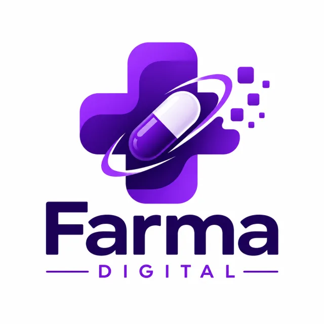

Objetivo do Sistema
O principal objetivo é simplificar o processo de acesso aos medicamentos, evitando filas e melhorando a experiência da população no atendimento público.
Conectando pessoas à saúde com mais facilidade, agilidade e acesso digital aos medicamentos.

Farma Digital é uma plataforma desenvolvida para facilitar o acesso da população aos medicamentos fornecidos pela rede pública.
O sistema permite consultar medicamentos disponíveis, acompanhar solicitações e receber atualizações em tempo real, tornando o atendimento mais rápido, moderno e eficiente.
O principal objetivo é simplificar o processo de acesso aos medicamentos, evitando filas e melhorando a experiência da população no atendimento público.
O usuário acessa a plataforma, busca pelo medicamento, consulta a disponibilidade e acompanha sua solicitação.
Farma Digital une tecnologia e saúde para transformar a forma como a população acessa medicamentos públicos.